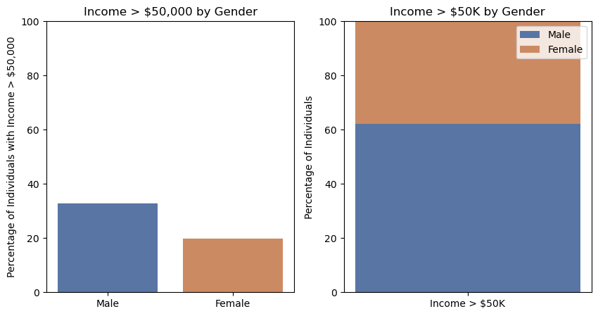
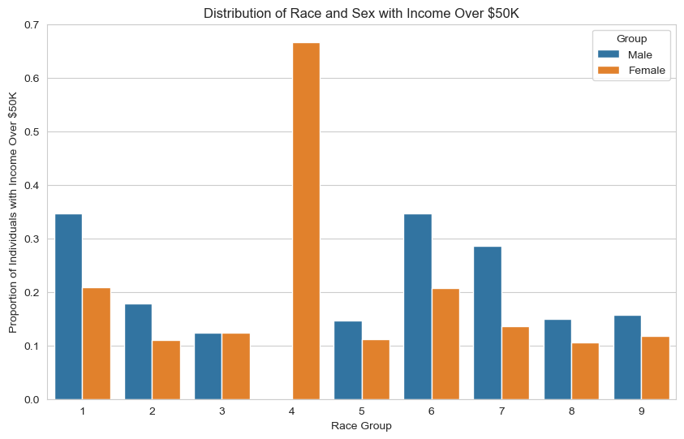
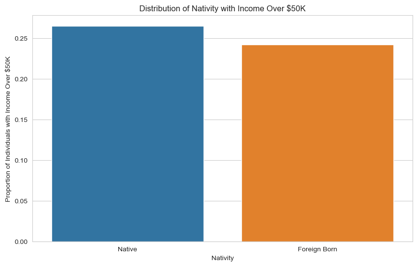
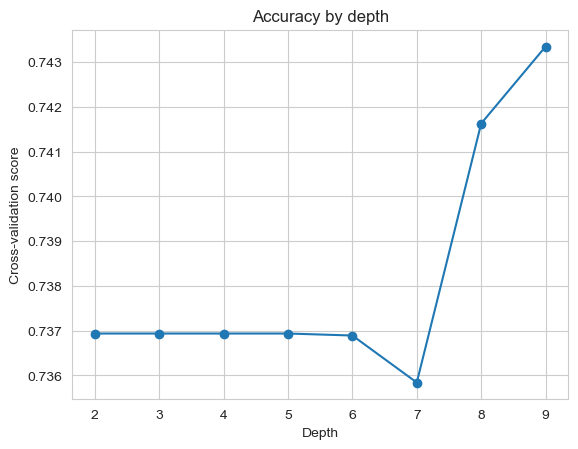

Exploring the impact of algorithmic decision making on equality
Author
Anweshan Adhikari
Introduction to the dataset
In this blog, we will be working with data from American Community Survey using the ACSDataSource class. Each row in our datset represents an individual who took the PUMA survey in Colorado, USA. First, let’s have a look at our dataset:.
Code
from folktables import ACSDataSource, ACSEmployment, BasicProblem, adult_filterimport numpy as npSTATE ="CO"data_source = ACSDataSource(survey_year='2018', horizon='1-Year', survey='person')acs_data = data_source.get_data(states=[STATE], download=True)acs_data.head()
RT
SERIALNO
DIVISION
SPORDER
PUMA
REGION
ST
ADJINC
PWGTP
AGEP
...
PWGTP71
PWGTP72
PWGTP73
PWGTP74
PWGTP75
PWGTP76
PWGTP77
PWGTP78
PWGTP79
PWGTP80
0
P
2018GQ0000225
8
1
300
4
8
1013097
26
16
...
23
4
24
33
53
46
5
4
47
42
1
P
2018GQ0000483
8
1
4103
4
8
1013097
41
19
...
7
40
39
43
41
6
41
6
41
44
2
P
2018GQ0000529
8
1
4101
4
8
1013097
16
24
...
31
16
1
32
17
15
16
17
2
18
3
P
2018GQ0000670
8
1
818
4
8
1013097
3
22
...
6
3
2
7
3
4
5
3
3
3
4
P
2018GQ0000721
8
1
819
4
8
1013097
17
65
...
22
0
17
37
0
0
30
16
17
1
5 rows × 286 columns
It is evident that our dataset consists of a lot of columns, each representing a different feature of interest. Some of such features are race(RAC1P), sex(SEX), employment status(ESR), Marital status(MAR) and so on. However, for the purposes of this blog, we will only be using some of these features. The features I have chosen are age, race, disability record, nativity ,income and citizenship status because these factors are usually associated with allocative bias in different social contexts.
Code
#subsetting the features# Reducing number of featurespossible_features=["PINCP", "RAC1P", "CIT","SEX", "DIS","AGEP","NATIVITY"]acs_data[possible_features]features_to_use = [f for f in possible_features if f notin ["PINCP","SEX"]]
From the folktables library, we will be usig the BasicProblem class to make a problem to predict whether a not an individual’s income is greater that $50k based on their Race.
Once we create the IncomeProblem object, we convert the dataframe to a numpy array that will feature three variables: features, label and group. We can then use these arrays to train our models. We will then be splitting out data set into training data and testing data. We can do so by using the train-test split class from the sklearn.model_selection model library. A test_size of 0.2 means that 20% of out dataset will be used for the testing dataset and 80% will be used as the training data set. After train-test split we will be ready to create a model and use our training data to train it.
The shape that the training dataset consists of 214,480 observations, with each instance having values for 7 different features.
Let’ see how many of these observations have an income of <= to an income of $50,000. As shown in the output below, 79.39% of people in Colorado have an income of less that or equal to 50,000 dollars.
The results produced from the code below shows the percentage of males that have an income of greater than $50,000 and percentage of female with an income greater than $50,000.
Group Count Percentage
Male 7305 62.064571
Female 4465 37.935429
We can observe that 64% of the total male have an income greater than $50k while 36% of the total female population has an income greater than $50k. We can see the summarized findings in the chart belowe
Code
import matplotlib.pyplot as pltfig, axs = plt.subplots(nrows=1, ncols=2, figsize=(10, 5))axs[0].bar(["Male", "Female"], [male_percent, female_percent], color=["#5975a4", "#cc8a63"])axs[0].set_ylim(0, 100)axs[0].set_ylabel("Percentage of Individuals with Income > $50,000")axs[0].set_title("Income > $50,000 by Gender")axs[1].bar("Income > $50K", income_percent[1], width=0.1, color="#5975a4")axs[1].bar("Income > $50K", income_percent[2], bottom=income_percent[1], width=0.1, color="#cc8a63")axs[1].set_ylim(0, 100)axs[1].set_ylabel("Percentage of Individuals")axs[1].set_title("Income > $50K by Gender")axs[1].legend(["Male", "Female"])plt.show()

Now, let’s observe the relation of race and sex with income:
Code
import pandas as pdimport matplotlib.pyplot as pltimport seaborn as sns# Computing proportion of positive labels by race and sexrace_proportion = df.groupby(["RAC1P", "group"], as_index=False)["label"].mean()sns.set_style("whitegrid")plt.figure(figsize=(10, 6))ax = sns.barplot(data=race_proportion, x="RAC1P", y="label", hue="group")plt.title("Distribution of Race and Sex with Income Over $50K")plt.xlabel("Race Group")plt.ylabel("Proportion of Individuals with Income Over $50K")handles, labels = ax.get_legend_handles_labels()labels[0] ="Male"labels[1] ="Female"ax.legend(handles, labels, title="Group")plt.show()

THe plot shows that for most race groups, there are more male populations with an income greater than 50k. The only exception to this is race group 4 which is “Alaska Native alone”. Further more we can also observe that Asian alone is the race with the highest proportion of individuals with an income greater than 50k collectively between both the genders.
Let’s also obeserve the relationship between nativity and Income.
Code
# Computing proportion of positive labels by race and sexcit_proportion = df.groupby(["CIT", "group"], as_index=False)["label"].mean()
Code
import pandas as pdimport matplotlib.pyplot as pltimport seaborn as sns# Computing proportion of positive labels by citizenshipcit_proportion = df.groupby(["NATIVITY"], as_index=False)["label"].mean()sns.set_style("whitegrid")plt.figure(figsize=(10, 6))sns.barplot(data=cit_proportion, x="NATIVITY", y="label")plt.title("Distribution of Nativity with Income Over $50K")plt.xlabel("Nativity")plt.ylabel("Proportion of Individuals with Income Over $50K")plt.gca().set_xticklabels(["Native", "Foreign Born"])plt.show()

As shown by the bar chart, the poportion of individuals with an income over 50k for Native Born are higher than Foreign Born in Colorado.
Implementing a Model
For our training data set, we will be using a decision tree model. It utilizes the Scikit-learn library to import the necessary modules, including SVC, LogisticRegression, make_pipeline, StandardScaler, confusion_matrix, cross_val_score, and DecisionTreeClassifier. The code also shows the process tuning a model and cross-validation for a decision tree classifier. It iterates over a range of depth values from 2 to 19. Inside the loop, a pipeline is created using make_pipeline, which includes StandardScaler for data preprocessing and DecisionTreeClassifier with the depth value. Cross-validation scores are calculated using cross_val_score with cross-validation of 10 folds. Finally, best depth is the depth value equating to the highest score.
Code
from sklearn.svm import SVCfrom sklearn.linear_model import LogisticRegressionfrom sklearn.pipeline import make_pipelinefrom sklearn.preprocessing import StandardScalerfrom sklearn.metrics import confusion_matrixfrom sklearn.model_selection import cross_val_scorefrom sklearn.tree import DecisionTreeClassifierscores = []depths =range(2, 10)for depth in depths: pipeline = make_pipeline(StandardScaler(), DecisionTreeClassifier(max_depth=depth)) score = cross_val_score(pipeline, X_train, y_train, cv=10) scores.append(score.mean())best_depth = depths[np.argmax(scores)]plt.plot(depths, scores, '-o')plt.xlabel('Depth')plt.ylabel('Cross-validation score')plt.title('Accuracy by depth')plt.show()print(f"The best depth is {best_depth} with a CV score of {max(scores)}")

The best depth is 9 with a CV score of 0.7433510512632892
Code
model = make_pipeline(StandardScaler(),DecisionTreeClassifier(max_depth=9))model.fit(X_train,y_train)
The PPV value indicates the reliability of positive predictions made by our model.This value means that when our model predicts an instance to belong to the positive class, it is correct about 50% times. This suggests that our model has high rate of false positives compared to true positives which means the model is struggling to accurately predict the positive class.
The false negative rate of about 67% indicates that our model failed to recognize 60% of actual positive instances, and thus categorized them as negative. Also, 11.3% of actual negative instances were incorrectly classified as positive by our model as indicated by the falce positicve score.
Code
# Calculating accuracy for malemale_indices = group_test ==1male_indices = np.squeeze(male_indices)male_y_test = y_test[male_indices]male_y_hat = y_hat[male_indices]male_accuracy = np.mean(male_y_hat == male_y_test)male_tn, male_fp, male_fn, male_tp = confusion_matrix(male_y_test, male_y_hat).ravel()male_fnr = male_fn / (male_fn + male_tp)male_fpr = male_fp / (male_fp + male_tn)print(f"The accuracy score for males is {male_accuracy}")print(f"The False Negative Rate (FNR) for males is{male_fnr}")print(f"The False Positive Rate (FPR) for males is {male_fpr}\n")# Calculating accuracy female female_indices = group_test ==2female_indices = np.squeeze(female_indices)female_y_test = y_test[female_indices]female_y_hat = y_hat[female_indices]female_accuracy = np.mean(female_y_hat == female_y_test)female_tn, female_fp, female_fn, female_tp = confusion_matrix(female_y_test, female_y_hat).ravel()female_fnr = female_fn / (female_fn + female_tp)female_fpr = female_fp / (female_fp + female_tn)print(f"The accuracy for females is {female_accuracy}")print(f"The False Negative Rate (FNR) for females is {female_fnr}")print(f"The False Positive Rate (FPR) for females is {female_fpr}\n")
The accuracy score for males is 0.7074805288896939
The False Negative Rate (FNR) for males is0.6748099891422367
The False Positive Rate (FPR) for males is 0.1011144332699103
The accuracy for females is 0.7740511915269197
The False Negative Rate (FNR) for females is 0.6610800744878957
The False Positive Rate (FPR) for females is 0.12415595730777608
Although the model performs relatively well for both subgroups, there is a slight difference in accuracy, with females having a slightly higher accuracy compared to males. We will thus examine if our model is accurately calibrated.
correctly predicted positive instances for men: 0.8988855667300897
correctly predicted positive instances for female: 0.8758440426922239
The process of Calibration involves checking if the predicted probabilities align with the predicted outcomes. For males, the proportion of correctly predicted positive instances (income greater than $50k) was approximately 0.879. Similarly, for women, the proportion of correctly predicted positive instances was approximately 0.843. Thus, the model appears to be relatively well calibrated for both males and females. In terms of the error rate balance, the fpr for men and fpr for women only has a difference of about 0.03 and about the same for fnr. Hence, the model does not show any significant imbalances in the error rates.
Human Resources Departments in companies in Colorado could make a good use of our model to support salary adjustments across different genders. If the model was to show significant biases, it could lead to unfair treatment or discrimination against certain demographic groups. However in case of male and female in our model, there wasn’t a significant bias, hence the impact of deploying your model for large-scale prediction might not cause problems. However, the accuracy scores for male indicates than the model with get it’s predictions wrong for about 29 out of every 100 males and 24 out of every 100 females. These scores will have to be improved, if the model were to be used in any significant industry or decision making process.
It is important to consider bias across other features as well and also to consider bias amongst other genders that are not male and female. Hence, I would believe, a lot more experiments are needed to be carried out before implementing this model in any large-scale prediction. Based on my bias audit, the model is not showing any significant problematic bias but as I mentioned earlie,r considering other features and expanding the dataset is essential in using the model for any significant predictions.